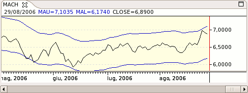

Upper and lower moving average channels (also called straight envelopes) are drawn at a certain percentage above and below the moving average. The channels are drawn according to the formula:
A well-drawn channel contains the bulk of prices, with only a few extremes poking out. Adjust the coefficient until the channel contains approximately 95 percent of all prices for the past several months.
Different trading vehicles and timeframes require different channel widths. Volatile markets require wider channels and higher coefficients. The longer the timeframe, the wider the channel; weekly channels tend to be twice as wide as dailies.

Parameters